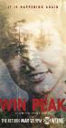

What is this site?
Stephen's Profile
Browser Extension
Stephen Klancher
Recent
Overall
Year Overview
Series
Lists
0
List contains: 18 items, 0.3 hours.
Seasons:
1
|
Title Search (4+ characters):
Group:
None
Example Group: Me and Stephen
Who's seen it:
No filter
Everyone
No One
Anyone
Anyone Has Not
Who's commented:
No filter
Everyone
No One
Anyone
Anyone Has Not
Netflix:
No Filter
Available for Instant Watch
Netflix Link Known
Netflix Link Unknown
Missing Data:
No Filter
Runtime
Season
Release Year (YYYY) or Decade (YYYx):
Sort:
Normal
Newest Episodes First
Episodes in Order
Recently Watched First
Watched in Order
Newest Releases First
Releases in Order
Stephen Klancher
...has seen 0
...has not seen 0.3 hours
Timeline

Season 1
Part 1 (2017)
Airs on 2017-05-21
S1 - E1 of
0
Stephen Klancher
:
Part 2
Airs on 2017-05-21
S1 - E2 of
0
Stephen Klancher
:
Part 3
Airs on 2017-05-21
S1 - E3 of
0
Stephen Klancher
:
Part 4
Airs on 2017-05-21
S1 - E4 of
0
Stephen Klancher
:
Part 5
Airs on 2017-06-04
S1 - E5 of
0
Stephen Klancher
:
Part 6
Airs on 2017-06-11
S1 - E6 of
0
Stephen Klancher
:
Part 7
Airs on 2017-06-18
S1 - E7 of
0
Stephen Klancher
:
Part 8
Airs on 2017-06-25
S1 - E8 of
0
Stephen Klancher
:
Part 9
Airs on 2017-07-09
S1 - E9 of
0
Stephen Klancher
:
Part 10
Airs on 2017-07-16
S1 - E10 of
0
Stephen Klancher
:
Part 11
Airs on 2017-07-23
S1 - E11 of
0
Stephen Klancher
:
Part 12
Airs on 2017-07-30
S1 - E12 of
0
Stephen Klancher
:
Part 13
Airs on 2017-08-06
S1 - E13 of
0
Stephen Klancher
:
Part 14
Airs on 2017-08-13
S1 - E14 of
0
Stephen Klancher
:
Part 15
Airs on 2017-08-20
S1 - E15 of
0
Stephen Klancher
:
Part 16
Airs on 2017-08-27
S1 - E16 of
0
Stephen Klancher
:
Part 17
Airs on 2017-09-03
S1 - E17 of
0
Stephen Klancher
:
Part 18
Airs on 2017-09-03
S1 - E18 of
0
Stephen Klancher
:
Watched an episode not known by IMDb?
Season:
-
Episode:
Date:
Comment: